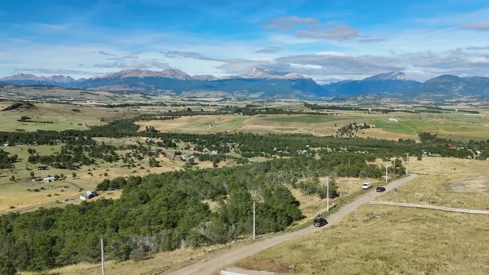
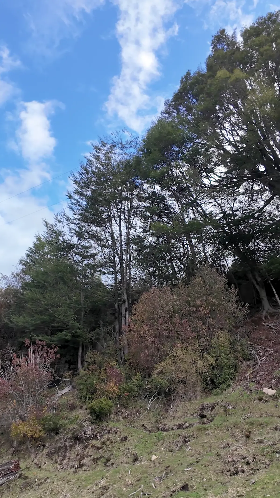

Proyectos en paisajes del sur de Chile. Territorios para contemplar, descubrir y proyectar una nueva forma de vivir.
Explorar proyectos ↗Creemos en los lugares que invitan a quedarse un poco más. En la amplitud del paisaje, la cercanía del agua y el tiempo que recuperamos cuando nos conectamos con lo esencial. Conoce los proyectos de Inmobiliaria El Roble en Aysén, Los Ríos y el Maule.

Descubrir proyecto ↗

Descubrir proyecto ↗
Descubrir proyecto ↗
Descubrir proyecto ↗
Descubrir proyecto ↗
Las imágenes identificadas como material propio corresponden a los proyectos señalados. En proyectos sin material original cargado, las imágenes son provisionales y no representan el terreno.
Desde los valles de Aysén hasta los paisajes del Maule, cada proyecto merece una mirada propia. Descubre sus fotografías, antecedentes y entorno en una página dedicada.
Escríbenos para solicitar disponibilidad, condiciones comerciales y coordinar una visita.
Hablar por WhatsApp ↗contacto@parcelasconrio.cl